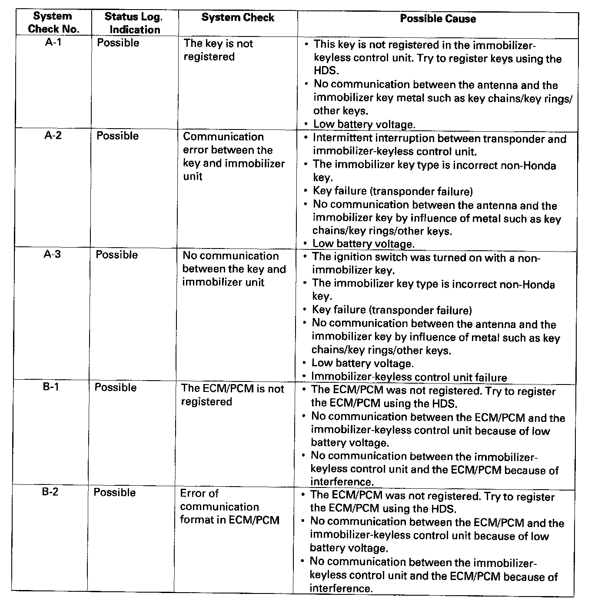
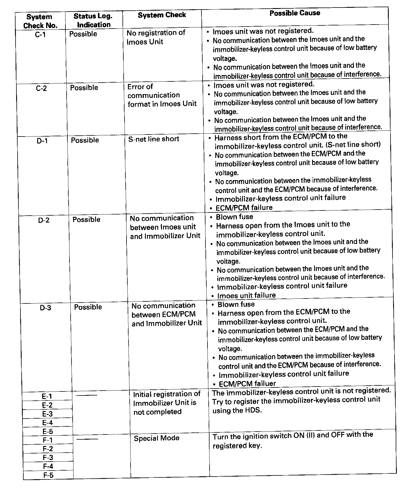

System Check
System Check1. Connect the HDS to the data link connector.
2. Turn the ignition switch ON (II).
3. Monitor the System Check in the Immobilizer Info with the HDS.


4. If the HDS displays the "Normal", the immobilizer system is OK. If the HDS displays any other messages, check as follows: